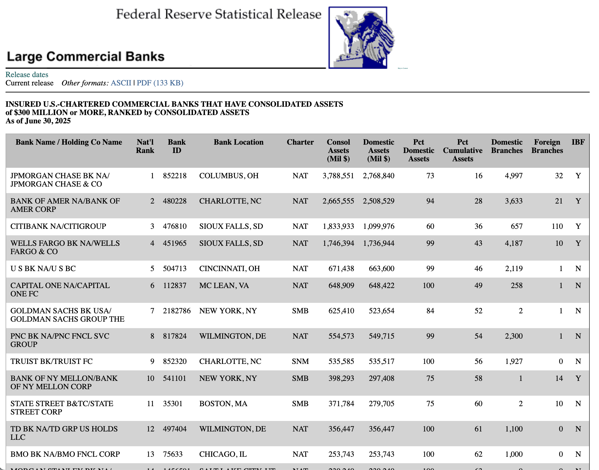
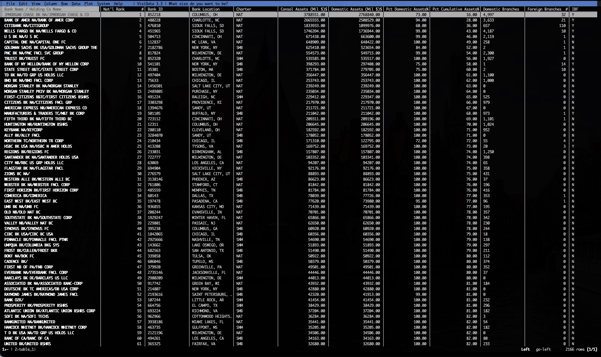
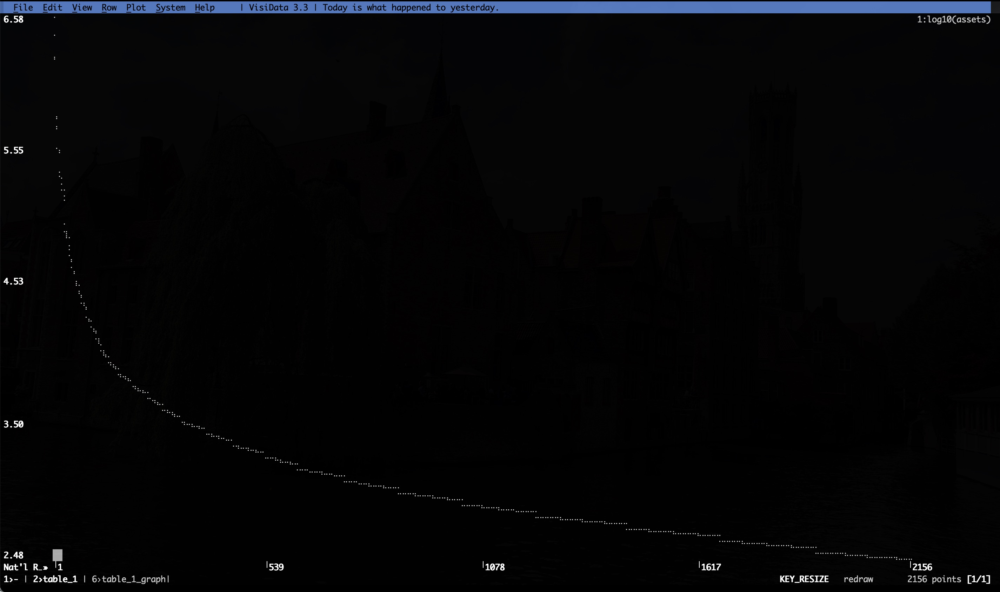

I’ve been loving VisiData for years now. It’s my favorite way to poke around tabular data without the overhead of spreadsheets.
In 2020 I posted a short video demonstrating some quick data exploration you can do with it:
Today I appreciated another snappy use case: pulling and transforming HTML table data.
I learned that the Federal Reserve publishes a regularly-updated list of the largest commercial banks. It looks like this:

It also comes in PDF and ASCII formats. Unfortunately, the ASCII format would require bespoke parsing.
The good news is the HTML-formatted data uses good old <table> instead of <div> nonsense. Better yet, VisiData can work really well with HTML tables:
curl -s https://www.federalreserve.gov/releases/lbr/current/ | vd +:table_1::which does the following:
- Pull the page HTML with curl
- Pipe it into VisiData
- Select the second (zero-indexed) table
which presents this:

You can often skip the curl step. VisiData can usually fetch HTML pages directly with the url passed as a positional argument (go try it on Wikipedia!). But the Federal Reserve page was 403’ing me. Rather than mess with VisiData User-Agent strings, I moved the problem to curl, which worked.
You can do fun visualizations in the terminal, like graph the log10 of the Consol Assets (Mil $) column, which looks like this:

But what’s even more handy is you can just convert the entire data set directly to TSV (there are commas in the numeric data; CSVs are kinda bad) in one go:
curl -s https://www.federalreserve.gov/releases/lbr/current/ |
vd +:table_1:: -b -o feddata.tsvor SQLite:
curl -s https://www.federalreserve.gov/releases/lbr/current/ |
vd +:table_1:: -b -o feddata.sqliteor JSON:
curl -s https://www.federalreserve.gov/releases/lbr/current/ |
vd +:table_1:: -b -o feddata.jsonAnd just like that, you’ve got clean data of every big bank in the country.
Not bad for one pipe.